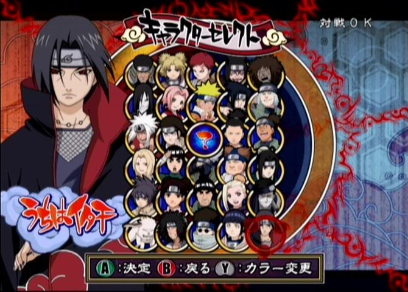
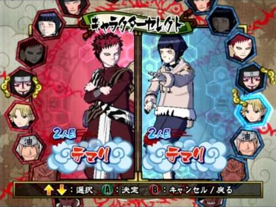

The Internet is Serious Business!
Home > Video Games > GameCube > Naruto: Clash of Ninja/Naruto: Gekitō Ninja Taisen! Series > Naruto: Gekitō Ninja Taisen! 4
After buying Naruto: Gekitō Ninja Taisen! 3 (GNT3), I was satisfied for 2 years, but eventually—perhaps because it was bugging me that I did not yet own the complete GameCube series—I went ahead and ordered Naruto: Gekitō Ninja Taisen! 4 (GNT4) online in the middle of August 2009 from Toys N' Joys, a somewhat well-known store in Hawaii that specialized in Japanese merchandise, and which, unfortunately, closed down in 2015. I had actually ordered the game first from Play-Asia.com, and was thus expecting a long shipping time (a familiar experience from importing the previous two games in the series) because that company is headquartered in Hong Kong, but soon afterwards I learned that Toys N' Joys had it in stock, so I canceled the earlier Play-Asia.com order, as I wanted a faster shipping time.
That turned out to be a wise decision: GNT4 took only about a week or two to ship from Toys N' Joys in Hawaii to my house (which I will only say is somewhere else in the United States), rather than the roughly 2 to 3 weeks of the previous two games. It is the third—and, so far, the final—video game I have ever imported. I remember watching the two YouTube videos Naruto: Gekitou Ninja Taisen 4 - Ultimate Combos
and Naruto Gekitou Ninja Taisen 4 combo movie
perhaps as far back as 2007, prior to buying even GNT3, but I definitely re-watched them around the time I purchased this game.
GNT4 introduces Kisame and Kabuto as playable characters, and, notably, is the only game in the entire series (including the Wii games) that has the Sound Four/Five; along with alternative versions of Naruto, Sasuke, and Hinata, the total number of playable fighters is a pretty large 39. It also introduces the combo cancel, which adds even more depth to the gameplay, and can be quite useful if it is used properly; nearly all of the impressive combos in the two YouTube videos I linked to earlier use combo cancel.
There is only one minor thing that I feel got slightly worse in GNT4: in the previous three games of the series, the character select screen laid out the playable characters all at once; in GNT3, for example, it looks like this:

In GNT4, however, the character select screen is instead some sort of wheel:

Doing it this way means you can't see all of the available fighters at once, and since you can only use up or down on the controller's control stick to turn it, generally it takes longer to select the character you want to use.
Despite having later on purchased both Naruto: Clash of Ninja Revolution 2 and Naruto Shippuden: Clash of Ninja Revolution 3 for the Wii, and playing both of those games rather intensively for a while, GNT4 still sticks out to me as the best game in the series—or, at least, the best one amongst the games of the series that I own. In recent years, whenever I feel like playing the Naruto: Clash of Ninja/Naruto: Gekitō Ninja Taisen! series of fighter games, I always turn to GNT4.


 All written materials on this Web site are my own, and all are released under the Do What the Fuck You Want to Public License Version 2.
All written materials on this Web site are my own, and all are released under the Do What the Fuck You Want to Public License Version 2.
This page last modified on 28 March 2021.